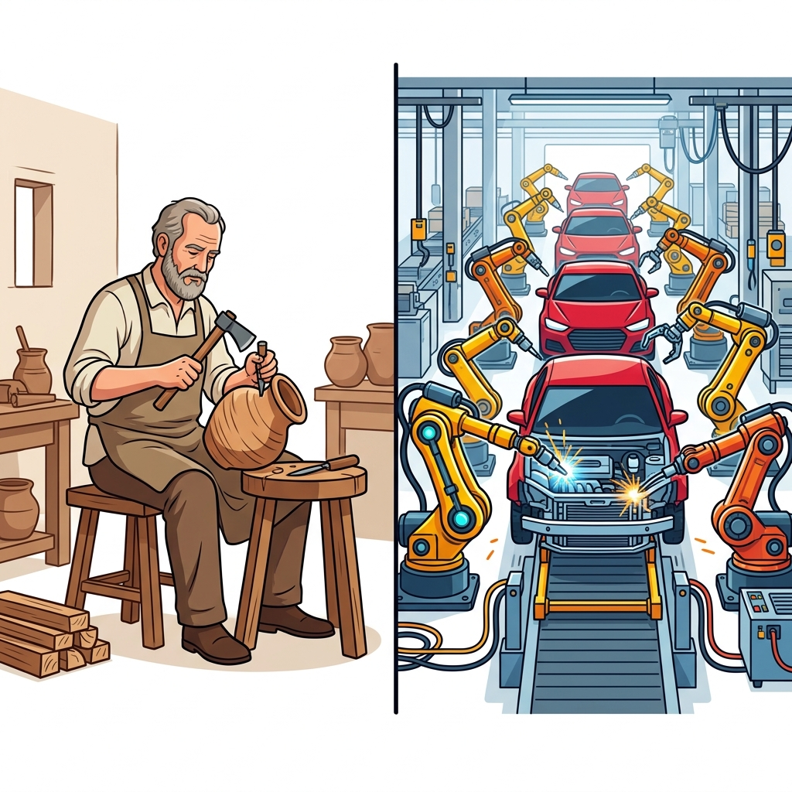
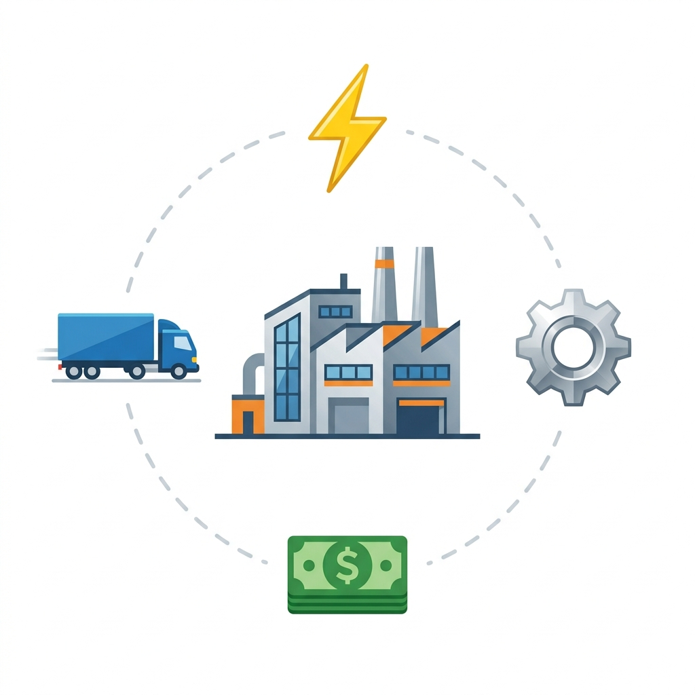
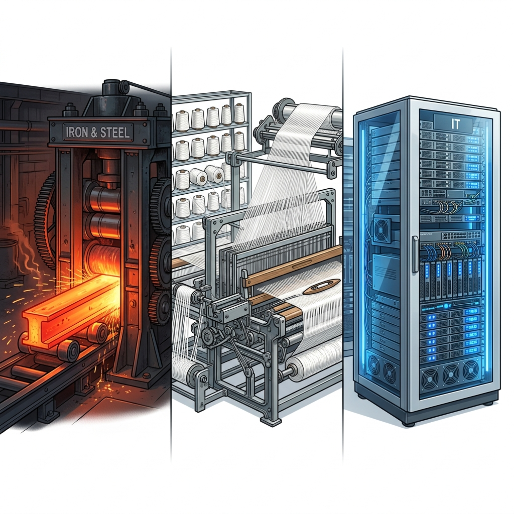

The literal meaning of manufacturing is 'to make a product by hand', but today it has a much wider meaning. The conversion of raw material into a more useful and valuable commodity with the help of machines or tools is called manufacturing.
It is important to understand that the more the raw material is changed in its form through processing, the greater is its value and utility. For example, iron ore gets more value when converted to steel, and even more value when transformed into machines and tools.
Industrial Development: It is recognized as a yardstick for measuring the economic development of a country. Industries play a vital role in making a country economically prosperous.
Importance of Manufacturing Industries:
Manufacturing industries are broadly classified into four major groups based on size, finished product, raw material, and ownership.

An industry is generally located at a place where it gets easy resources, skilled manpower, and lower investment cost to generate maximum profitability.

This is the backbone of modern civilization. It provides the industrial base for manufacturing other products, making it the ultimate Basic Industry. Roughly 65% of machines and utensils are made of steel.
In India: The first modern plant was TISCO (Tata Iron and Steel Company), established in 1907 by Sir Jamshedji Tata at Sakchi (now Jamshedpur, Jharkhand). Jamshedpur is ideal because it has abundant water from Subernarekha and Kharkai rivers, coking coal from Jharia, and iron ore from nearby areas. India also has major Public Sector plants managed by SAIL (Steel Authority of India Ltd) at Bhilai, Rourkela, and Durgapur.
Textile manufacturing is one of the oldest and most widespread industries. Today, it is the largest industry in India, providing employment to over 35 million people (20% of industrial labour).
Ahmedabad: The Manchester of India
Ahmedabad is the second largest textile center after Mumbai. It is located on the bank of the River Sabarmati. It thrives due to the warm and humid climate, proximity to the cotton-growing belt, and easy access to the Kandla sea port.
The IT sector facilitates rapid communication and the storage/processing of data through computers and telecommunications. A major component today is BPO (Business Process Outsource), which reduces overhead costs.
Bengaluru: The Silicon Valley of India
While the original Silicon Valley is in California, USA, Bengaluru (Karnataka) has emerged as India's IT capital. The city's Software Technology Park started in 1991. It offers an ambient climate, a large pool of well-qualified, low-cost technical personnel proficient in English, and excellent infrastructure.
